Commuting around Jakarta
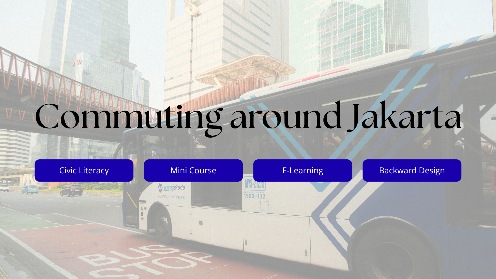
Overview
Commuting around Jakarta is a mini-course on how Backward Design principles can guide learning for a real-world skill: helping people confidently use Transjakarta's Bus Rapid Transit (BRT) system.
Instead of starting with a list of lessons, the project begins with a question — what should learners be able to do? The sections below outline this process: from initial ideas to learning objectives, to the assessment that defines success, and finally to the lessons and course design created to help learners achieve their goals.
The Ideas
First, I'm including three potential ideas that could be the basis of the lessons:
- Reading and navigating transit systems are part of literacy skills for urban independence.
- Using public transport contributes to sustainability and reduces overall road congestion.
- Public transportation should be considered as a civic right and shared resource that enables mobility across a city.
Learning Objectives
I decide to focus on the practicality of Idea 1, resulting the following learning objectives:
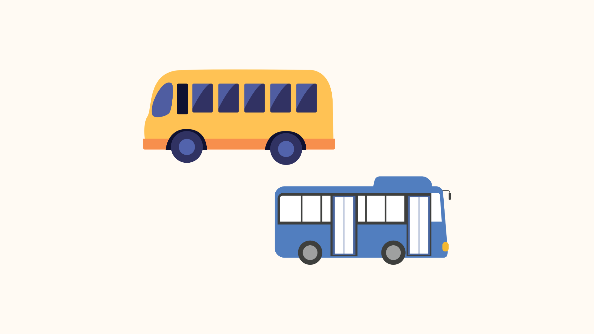
Learners will understand that Transjakarta operates multi-corridor networks of Bus Rapid Transit (BRT).
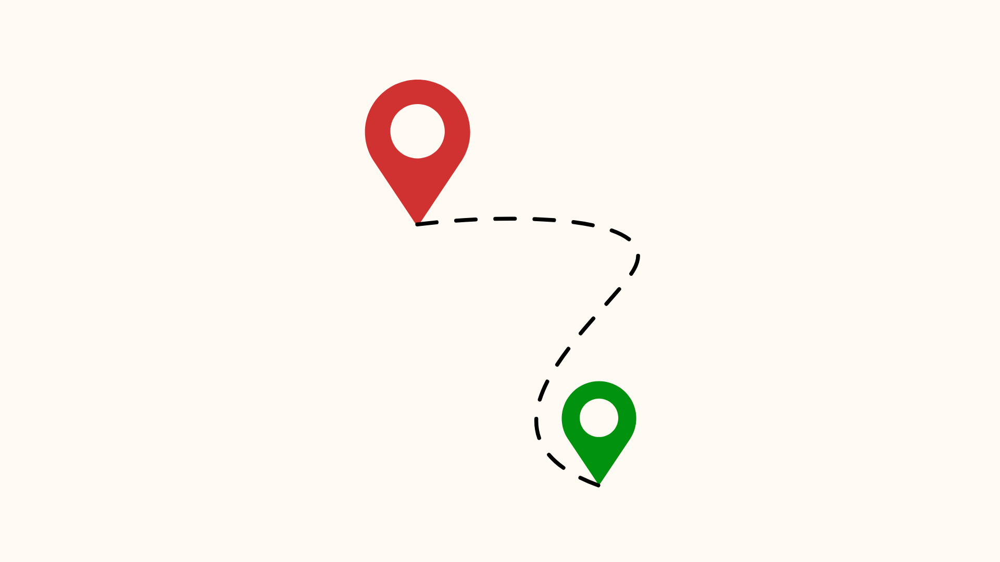
Learners will understand how to make a trip plan, which includes reading route maps, managing transfers, and anticipating delays.
Learners will understand various types of payment methods to make commuting more efficient.
Lessons to Learn
As instructional designers (IDs), we may be tempted to suggest various lessons to include. And usually, there is a lot, which could lead to cognitive overload—to both IDs and learners—if they're not carefully considered.
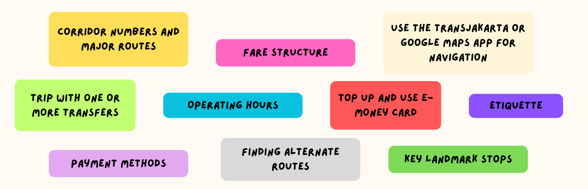
This is where Backward Design principles come in handy. Instead of starting with lessons, the next step is assessments plan to see if learners meet the learning goals. In this case, how will I know if the learners have achieved the desired results?
I will know learners meet the learning goals if:
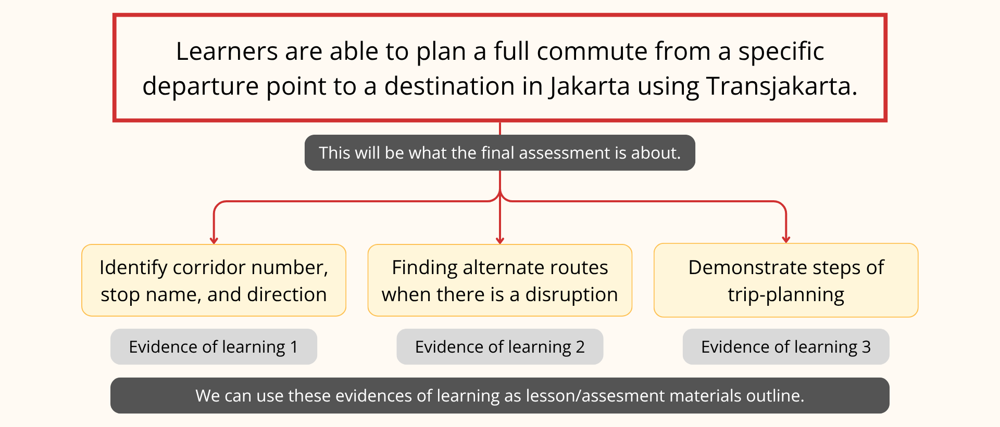
Important note!
I want to highlight that completing assessments doesn't always mean learners fully understand the materials. This is why evaluation is important. Specifically, learners could evaluate their understanding by regularly applying lessons when commuting daily.
"What about IDs? We can't always evaluate learners post-training."
IDs could benefit from learning techniques, such as spaced repetition, to ensure learners maintain a strong understanding over time.
Now that I have the learning "destination"…
I can start outlining the lessons; in other words, what it takes for learners to complete the final assessment and achieve learning goals.
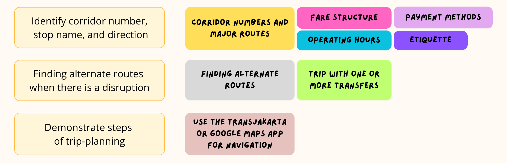
To summarize, this is what the learning design looks like using Backward Design principles
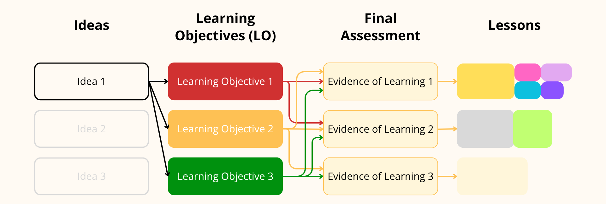
Let's break down the course design!
First, I use the Card feature to show 2025 traffic congestion data in Jakarta. This data is helpful because it provides important context for the lessons. I included the most relevant information on the cover, so learners can grasp the key points without flipping the card. Additionally, I changed the animation to cross-fade for a smoother card transition and a better user experience.

Here, I provided an example of two different operating hours for BRT. I also included the official Transjakarta website link for complete route information. This gives learners enough idea of where to find the operating hours without overwhelming them with all the route details.
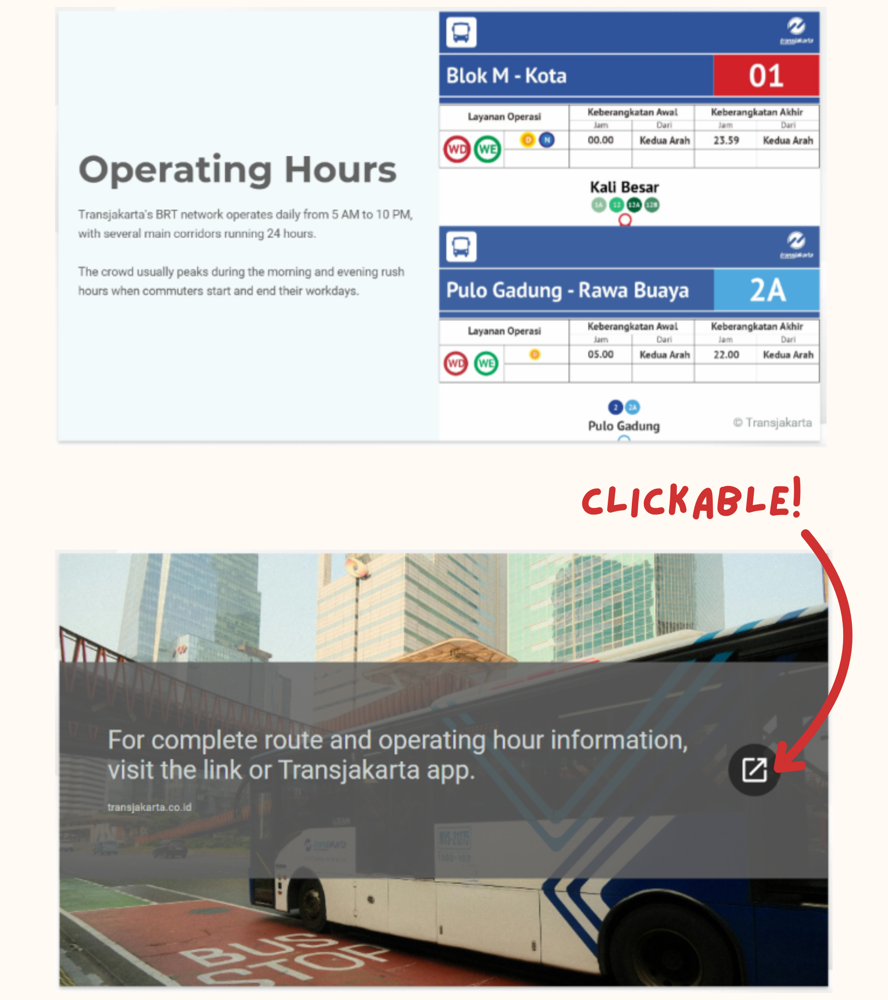
To share information on etiquette, I use Gallery mode for a more efficient presentation. This way, learners can review the points at their own pace.
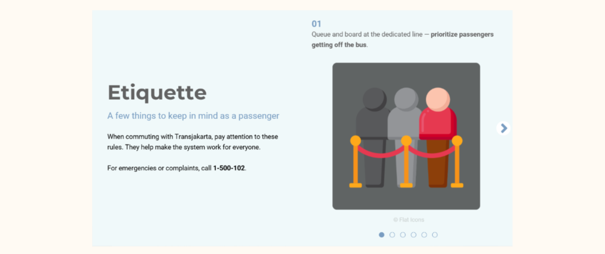
Given Transjakarta's fare structure, some demographics may benefit from free access. However, I decided not to present everything as it is not the most essential learners need to know. So, I chose another Card feature to share the most relevant information while allowing learners to explore more if they are interested.
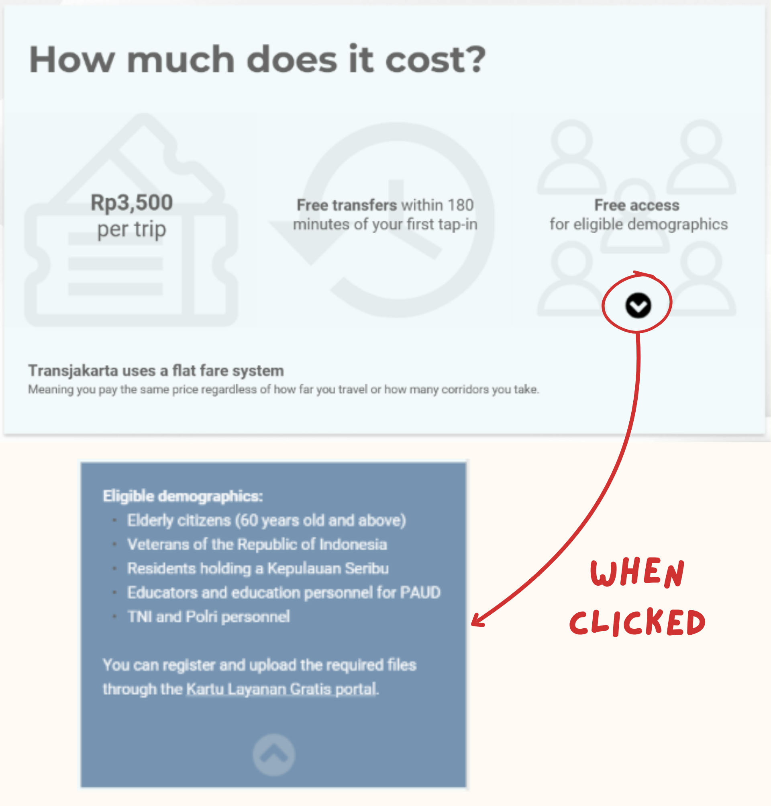
Learners also have a chance to apply what they have learned in the mini course. The practice involves sorting the steps to make a trip with Transjakarta, specifically the Bus Rapid Transit service.
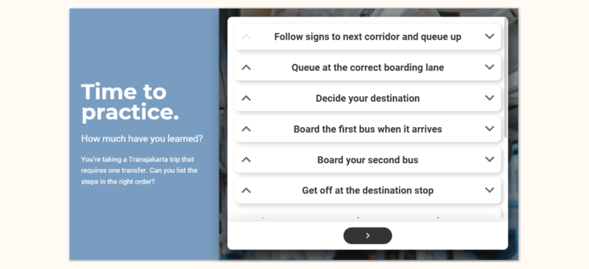